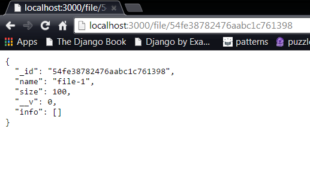

Since we want out application to be able to perform the database operations. We introduce Mongoose for the
connectivity and handling of the application to the database.
To do this, we first include Mongoose in our server side code:
var mongoose = require('mongoose');
Before we can interact with the database, we need the schema and model.
var FileSchema = new mongoose.Schema({
name: String,
size: Number,
info: [FileDetailSchema]
}, {collection: 'file'});
var FileModel = mongoose.model('FileModel', FileSchema);
Now, we are ready to make changes to the database through our code. In order to connect to the database,
we require connect().
We can retrieve all the data(as seen in previous experiment) and also a particular data using findByID()
app.get("/file/:index", function(req,res){
FileModel.findById(req.params.index, function(err, doc){
res.json(doc);
});
});

Similarly, we can target data in the retrieved information in more granular fashion.
We can also update the data belonging to a particular ID:
FileModel.findById("54fcfe667c0726381d99e8e3", function (err, data){
data.name = "File123";
data.save();
});